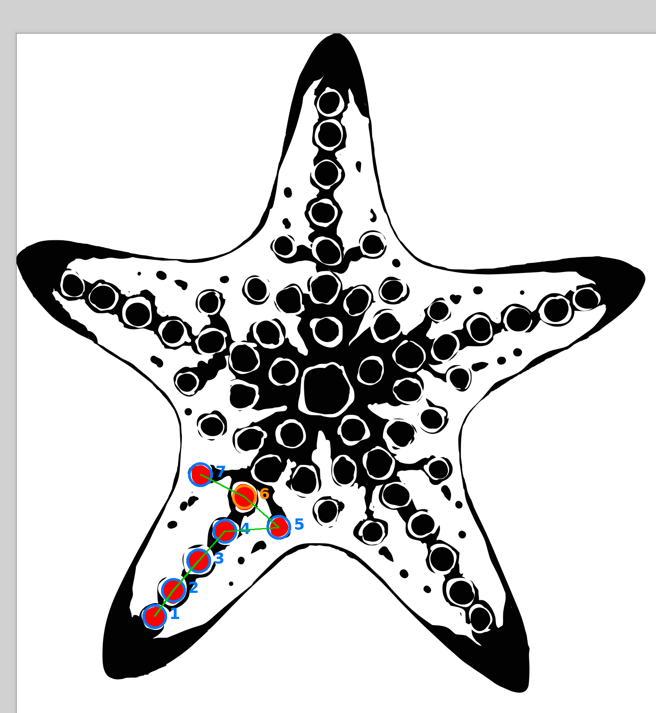

<title>Tentacle LED chain — order check</title>
<style>
  :root{
    --bg:#f6f4f0;
    --panel:#ffffff;
    --ink:#1c1b19;
    --ink-dim:#6b6560;
    --rule:#ddd7cd;
    --blue:#2f7dde;
    --amber:#d9872b;
  }
  @media (prefers-color-scheme: dark){
    :root{
      --bg:#17191b;
      --panel:#1f2225;
      --ink:#ece8e1;
      --ink-dim:#9a948c;
      --rule:#34383c;
      --blue:#5b9eef;
      --amber:#e9a24f;
    }
  }
  :root[data-theme="dark"]{
    --bg:#17191b; --panel:#1f2225; --ink:#ece8e1; --ink-dim:#9a948c; --rule:#34383c; --blue:#5b9eef; --amber:#e9a24f;
  }
  :root[data-theme="light"]{
    --bg:#f6f4f0; --panel:#ffffff; --ink:#1c1b19; --ink-dim:#6b6560; --rule:#ddd7cd; --blue:#2f7dde; --amber:#d9872b;
  }

  *{box-sizing:border-box;}
  body{
    margin:0;
    background:var(--bg);
    color:var(--ink);
    font-family: ui-sans-serif, system-ui, -apple-system, "Segoe UI", sans-serif;
    display:flex;
    justify-content:center;
    padding:2.5rem 1.25rem 4rem;
  }
  main{
    width:100%;
    max-width:62rem;
    display:flex;
    flex-direction:column;
    gap:1.5rem;
  }
  h1{
    font-family: ui-monospace, "SFMono-Regular", Menlo, Consolas, monospace;
    font-size:1.15rem;
    letter-spacing:0.02em;
    font-weight:600;
    margin:0;
    text-wrap:balance;
  }
  .sub{
    color:var(--ink-dim);
    font-size:0.95rem;
    max-width:40rem;
    line-height:1.5;
  }
  figure{
    margin:0;
    background:var(--panel);
    border:1px solid var(--rule);
    border-radius:4px;
    padding:0.75rem;
  }
  figure img{
    display:block;
    width:100%;
    height:auto;
    border-radius:2px;
  }
  figcaption{
    margin-top:0.6rem;
    font-size:0.82rem;
    color:var(--ink-dim);
    display:flex;
    gap:1.5rem;
    flex-wrap:wrap;
  }
  .legend-dot{
    display:inline-block;
    width:0.7em;
    height:0.7em;
    border-radius:50%;
    margin-right:0.4em;
    vertical-align:middle;
  }
  .dot-blue{background:var(--blue);}
  .dot-amber{background:var(--amber);}

  table{
    border-collapse:collapse;
    width:100%;
    font-family: ui-monospace, "SFMono-Regular", Menlo, Consolas, monospace;
    font-size:0.85rem;
    font-variant-numeric: tabular-nums;
  }
  th,td{
    text-align:left;
    padding:0.45rem 0.8rem;
    border-bottom:1px solid var(--rule);
  }
  th{
    color:var(--ink-dim);
    font-weight:500;
    font-size:0.75rem;
    text-transform:uppercase;
    letter-spacing:0.05em;
  }
  tr.gap td{color:var(--amber);}
  .panel{
    background:var(--panel);
    border:1px solid var(--rule);
    border-radius:4px;
    padding:1rem 1.25rem;
    overflow-x:auto;
  }
</style>
<main>
  <h1>tentacle 1 — LED chain order, reconstructed from your markup</h1>
  <p class="sub">
    Matched each red mark to the nearest silkscreen dot by rendering the SVG's coordinate
    space and solving for the pixel&#8594;mm transform (residuals &lt;0.2&nbsp;mm on 6 of 7 points).
    Chain order below runs tip&#8594;body, inferred from vertical position in the image.
  </p>

  <figure>
    
    <figcaption>
      <span><span class="legend-dot dot-blue"></span>matched to an existing silkscreen dot</span>
      <span><span class="legend-dot dot-amber"></span>no dot here &mdash; gap in the texture, position interpolated</span>
    </figcaption>
  </figure>

  <div class="panel">
    <table>
      <thead>
        <tr><th>#</th><th>x&nbsp;(mm)</th><th>y&nbsp;(mm)</th><th>source</th></tr>
      </thead>
      <tbody>
        <tr><td>1</td><td>79.05</td><td>242.64</td><td>silkscreen dot</td></tr>
        <tr><td>2</td><td>86.67</td><td>232.45</td><td>silkscreen dot</td></tr>
        <tr><td>3</td><td>96.70</td><td>220.56</td><td>silkscreen dot</td></tr>
        <tr><td>4</td><td>106.77</td><td>208.92</td><td>silkscreen dot</td></tr>
        <tr><td>5</td><td>128.28</td><td>207.26</td><td>silkscreen dot</td></tr>
        <tr class="gap"><td>6</td><td>114.71</td><td>195.16</td><td>no dot &mdash; interpolated</td></tr>
        <tr><td>7</td><td>97.53</td><td>186.27</td><td>silkscreen dot</td></tr>
      </tbody>
    </table>
  </div>

  <p class="sub">
    Two things to confirm before I replicate this onto the other 4 arms:
    is tip&#8594;body (1&#8594;7) the order you want wired, and for #6, should the LED sit at the
    interpolated point shown, or snap to a nearby real dot instead?
  </p>
</main>
